图与文
首页
抱朴守静
#1 图与文 作者：梧桐风 发表时间：2011-8-23 21:28:10
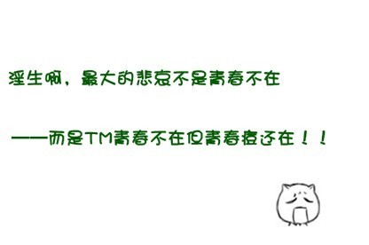
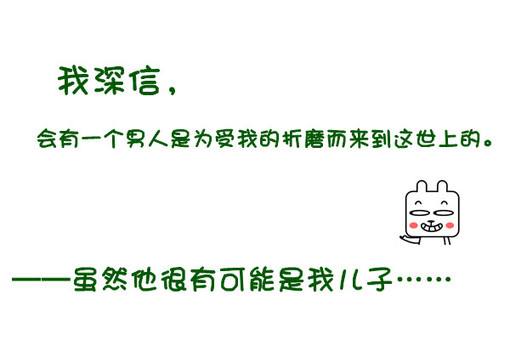
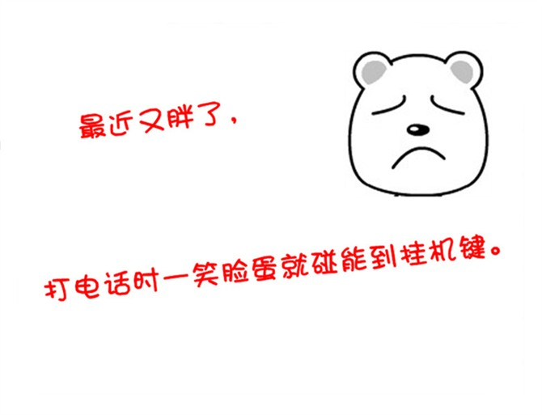
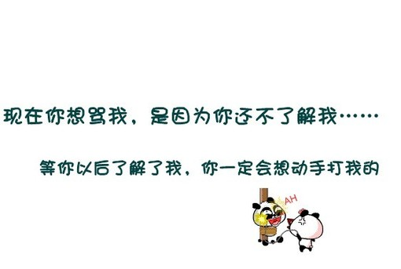
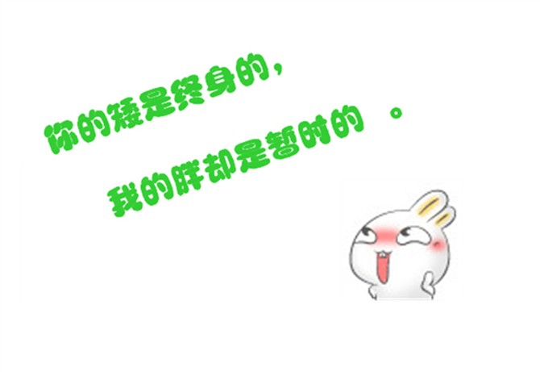
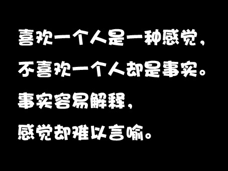
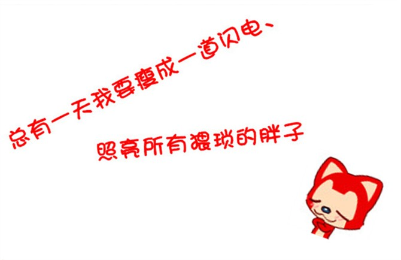
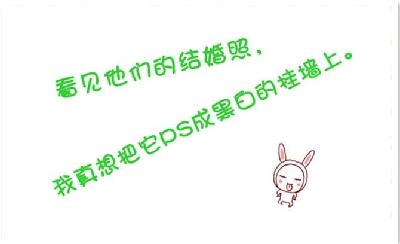
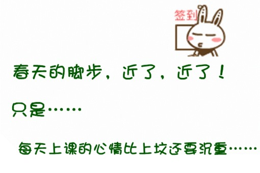
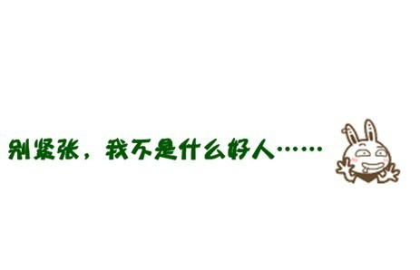
#2 Re:图与文 作者：梧桐风 发表时间：2011-8-23 21:29:13
 总有一天我要瘦成一道闪电，照亮所以瘦子
总有一天我要瘦成一道闪电，照亮所以瘦子
#3 Re:图与文 作者：微微一笑 发表时间：2011-8-23 21:34:25
上照片我帮你鉴定一下。
#4 Re:图与文 作者：蓝天蓝 发表时间：2011-8-23 21:52:18
同意发 照片
#5 Re:图与文 作者：蓝色★眼泪 发表时间：2011-8-23 23:56:34
图文搭配蛮好玩的~~
版主照片 嘿嘿~~
#6 Re:图与文 作者：掌棋如烟 发表时间：2011-8-25 22:28:55
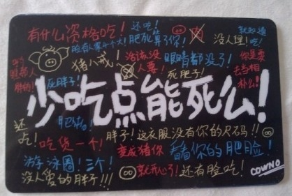
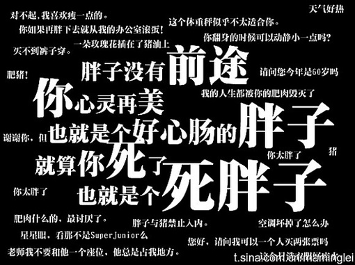
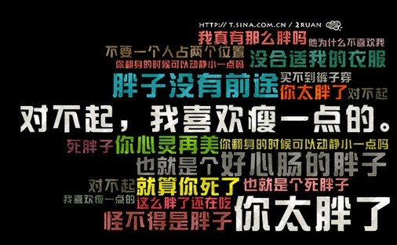